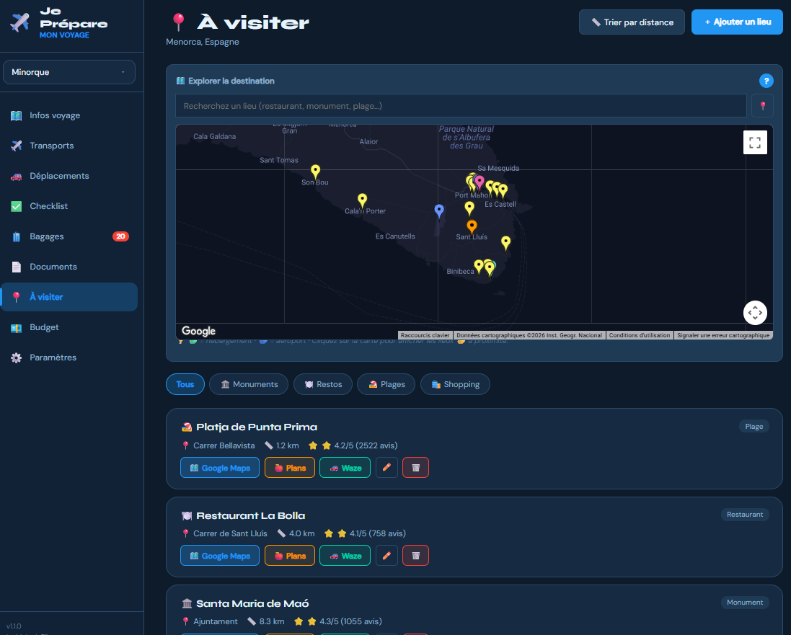
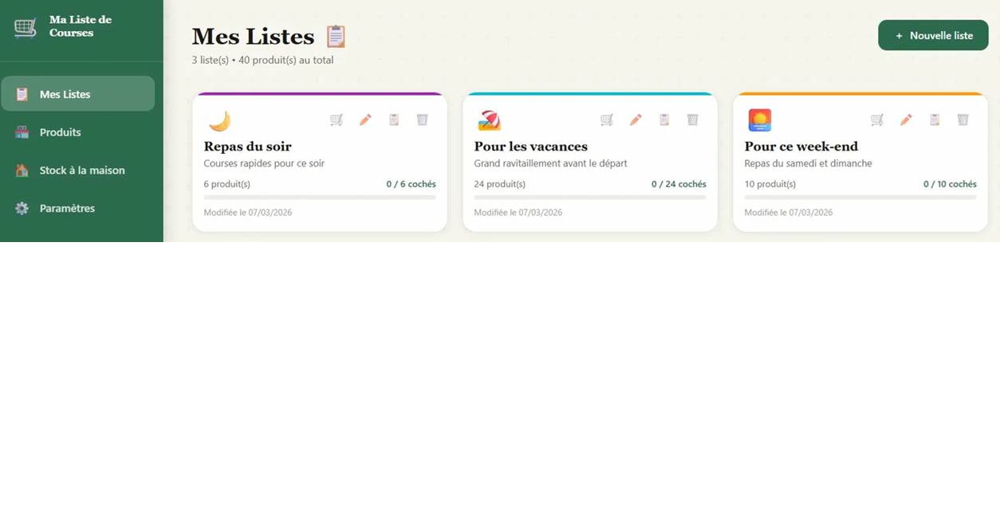
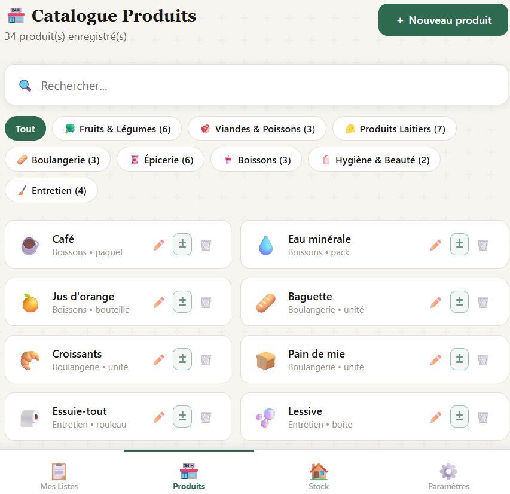

// apps web
Cap
Cap! est une PWA de suivi d'objectifs personnels — annuels, mensuels et hebdomadaires.
→
JePrepareMonVoyage
Application de planification de voyages. Organisez vos transports, hébergements, checklists et budget avec carte interactive.

→
MesListesDeCourses
Gestion de listes de courses et catalogue produits par catégorie avec suivi des stocks.


→
ChromaMix
Calculateur de mélanges de peinture. Obtenez les formules pour reproduire une couleur en acrylique ou aquarelle.
→
blazor-ui-editor
Editeur d'interface utilisateur visuel pour Blazor.
→
// repos github
Cap (Source)
Dépôt du projet Cap! Une application PWA de suivi d'objectifs personnels — annuels, mensuels et hebdomadaires.
↗
JePrepareMonVoyage (Source)
Code source de l'application de voyage. Gestion des données hors-ligne.
↗
MesListesDeCourses (Source)
Logique de gestion de listes et stockage local.
↗
ShutdownIfDontUsed
Service Windows surveillant l'inactivité pour éteindre le PC automatiquement.
↗
ChangeTimeWithoutBeingAdmin
Outil pour modifier l'heure système sans droits admin via un service dédié.
↗